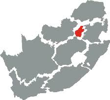
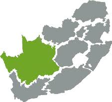
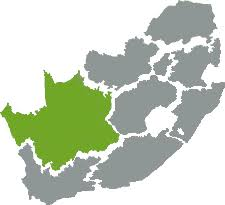

Welcome to the rainbow nation
South Africa has nine provinces in total, but we will explore six of them.


 

1.DRAMATIC LANDSCAPES -Drakensburg, Cape Peninsula, Wild Coast, Augrabies Falls Natiional Park and Blyde River Canyon.
2.WILDLIFE -Kruger National Park, Kgalagadi Transfrontier Park, Elephant Coast, Madikwe Game Reserve and Addo Elephant National Park.
3.OPEN SPACES -Namakwa, Free State, Karoo, Beaches and Kalahari.
4.ART -Zeits MOCAA Museum, Eastern karoo, Clarens,Ecoshrine, Jo'burg, Venda Region and William Humpreys Art Gallery.
5.HISTORY -Cape Town, Kimberley, Liberation trail, Apartheid Museum, Mapungubwe National Park, Oudtshoorn and Cape Dutch.
6.CULTURAL EXPERIENCES -Townships, Wildcoast, !Xaus Lodge, Venda region and Zululand.
7.FOOD & DRINKS -Cooking Safari, Food Markets, Wine tour, Beer cruise, Bunny chow, Wine on the river and Potluck Boskombuis.
8.ACTIVITIES & ADVENTURES -Garden Route, Bloukrans Bridge Bungee, Multi-day hikes, Kalahari, Canopy tours, Lion's Head paragliding, Abseiling and cheetah tracking.
9.ECCENTRIC CORNERS -Matjiesfontein, Hogsback, Haenertsburg, Wild Coast, Cape Peninsula and Barberton.
To do list Form page